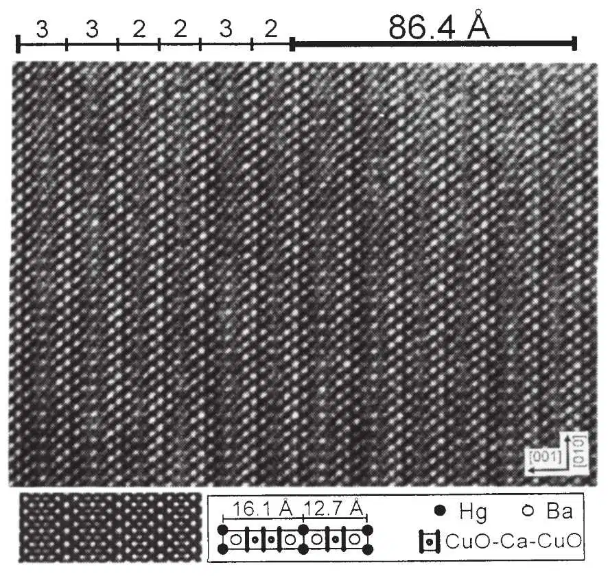
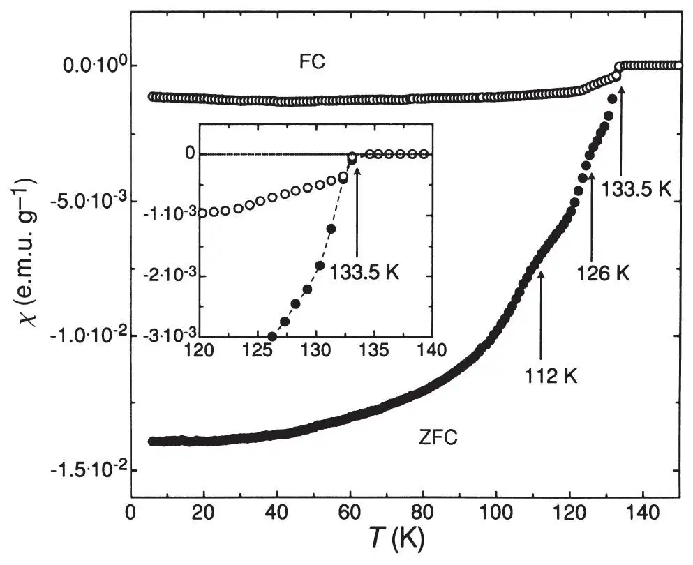
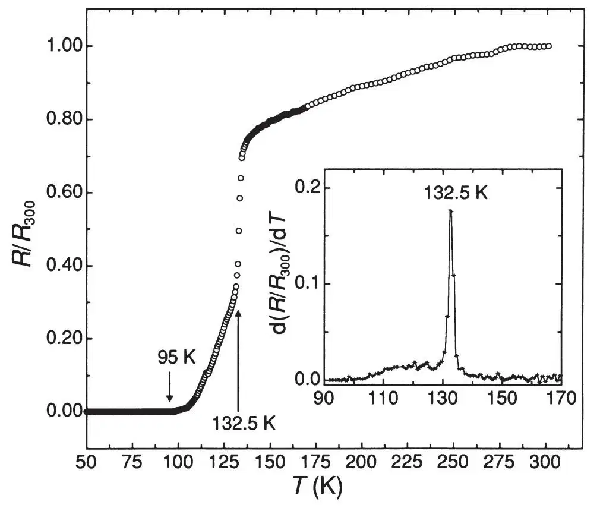

英文
英文席林等
编者按
1986年，两位瑞士物理学家发现了一种氧化物陶瓷材料，在温度低于约30 K时具有超导性。此前，许多物理学家们推测超导温度不可能高于20 K，而高温超导的发现开启了理论解释和实验探索具有更高转变温度（Tc）的新超导材料的竞赛。在1993年以前，Tc记录值已达到125 K。本文中的安德烈亚斯·席林及其同事们发现一种Tc为133 K的新型超导材料。从此，铜氧化物材料的Tc温度记录提升至138 K。但是目前在物理上并没有一种明确的理论解释。 英文
最近对于HgBa2CuO4+δ在低于94 K转变温度（Tc）的超导性的发现[1]，进而扩大到对适当（层状）结构中含有铜氧面的高Tc超导体的研究。以前用含铋和铊而不是汞的类似复合物所进行的实验表明，每个单胞中CuO2层多于一个的汞基复合物有可能达到更高的转变温度。本文对这一猜测提供了支持：因为发现高于130 K的超导性存在于含有HgBa2Ca2Cu3O1+x（每个单胞中有三个CuO2层）、HgBa2CaCu2O6+x（含两个CuO2层）的材料中，而且这两相的单胞以确定的序列形成有序的超结构。磁性和电阻测量都确认最大转变温度约为133 K，明显高于过去在Tl2Ba2Ca2Cu3O10（参考文献2，3）中观测到的记录值125~127 K。 英文
HgBa2CuO4+δ（Hg–1201，参考文献1）与铊系铜氧化物，如TlBa2CuO5（Tl–1201），在结构上的相似性暗示着具有组成通式为HgBa2Can-1CunO2n+2+δ的化合物的存在。含铊化合物TlBa2Can-1CunO2n+3的转变温度范围在小于10 K（n=1，参考文献4）至约110 K（n=3，参考文献5）之间。从这种意义上来看，我们可以预期Hg–Ba–Ca–Cu–O（HBCCO）体系也会有超过100 K的转变温度。尽管已有HgBa2RCu2O6+x（Hg–1212）（R为Eu，Ca）的成功合成的报道，但却没有在该体系中发现超导性[6]。 英文
我们根据参考文献1中所描述的制备Hg – 1201的过程制备了样品。将每种金属的硝酸盐的混合物充分研磨，在900 ℃于氧气中烧结，得到一种具有标称成分为Ba2CaCu2O5的前驱物。烧结物与HgO粉末混合并重新研磨后，压制成片并密封于抽成真空的石英管中。再将石英管水平地放置于钢质密闭容器中，于温度为800 ℃下保持5小时。打开容器时，我们发现石英管已经破裂。我们无法推想破裂发生在加热、冷却或开启过程中的哪个阶段。最后将部分的样片在流动的氧气中于300 ℃退火5小时。在样品的制备和表征过程中，采用了各种可能的措施以避免有毒的汞或含汞化合物的污染。 英文
在退火之后，将所得黑色物质采用吉尼耶技术的X射线衍射、能量色散X射线光谱（EDS）、选区电子衍射技术（SAED）和高分辨透射电子显微镜（HRTEM）进行表征。EDX分析表明，样品是由下列物质的分离的颗粒所组成：包括BaCuO2（约30%）、CuO（约30%）、一种含Hg、Ca和Cu组成不明的氧化物（约15%）、一种含Ca和Cu的氧化物（约5%）和约5%含未确定成分的杂质。样品总体积中约15%的部分是由含Hg、Ba、Ca和Cu的片状颗粒组成。我们对其中某些区域用菲利普斯CM 30–ST透射电子显微镜进行了SAED和HRTEM技术的详细研究。两种技术都清楚地表明，上述所检验的颗粒主要包含纯的HgBa2Ca2Cu3O8+x（Hg–1223）、无序的Hg–1223与Hg–1212的混合物，以及这两种单胞的周期性堆垛序列。我们没有发现与Hg–1201结构有关的颗粒或共生物。由于有意义的相只占相当小的体积分数，我们未能用X射线吉尼耶技术精确地测量其晶格参数。尽管如此，根据SAED图像，我们推测四方晶系Hg–1212和Hg–1223的晶格常数分别为c=12.7（2）Å和c=16.1（3）Å，以及对两种化合物都有效的a=3.93（7）Å。对Hg–1212的观测结果与参考文献6所得到的数值非常吻合。图1是典型的HRTEM图像，例如，它显示的堆垛同时含有Hg–1212和Hg–1223层。具有超晶格c轴c≈86.4 Å按照1223/1223/1212/1212/1223/1212堆垛序列延展到超过2,000 Å，因而可将这种超结构视为本征相。HRTEM和SAED图像都未能证明有HgO双层的存在。 英文

图1．晶粒在[100]取向上的HRTEM图像，包含Hg–1212和Hg–1223层。按照周期顺序，它们堆垛形成c≈86.4 Å（见正文）的超晶格。插图是一个衬度模拟（cs=1.1 mm，E=300 keV，散焦-870 Å，样品厚度23 Å）。右下方表示的是以Cu–O平面层的数目表示的堆垛序列和有关晶胞的放大示意图。 英文
我们使用一台超导量子干涉磁强计（量子设计）测量了样品的磁化率。图2显示的是有氧退火样品所测得的结果。在H=27 Oe的外场下，零场冷却磁化率（ZFC）相当于温度T=6 K时达到1/4π的100%左右，显示出完全的磁屏蔽。基于这一点估计，我们假定其平均密度 约为6 g·cm－3。场冷却（FC）磁化率达到最大可能值的10%左右。这个数值相当于样品中真正超导部分的体积分数的下限值，表明了体超导特性。抗磁性的起始温度Tc约为133.5 K，在FC和ZFC实验中均是如此（见图2中插图）。FC磁化率在温度为125 K时达到其完全低温数值的60%左右，强烈地表明Tc≈133.5 K的相比其他所有超导相都有优势。在ZFC曲线中，在温度为126 K和112 K处可以看到其他的特征，我们将其归结为另外的具有较低转变温度的不同超导相所引起的。 英文
约为6 g·cm－3。场冷却（FC）磁化率达到最大可能值的10%左右。这个数值相当于样品中真正超导部分的体积分数的下限值，表明了体超导特性。抗磁性的起始温度Tc约为133.5 K，在FC和ZFC实验中均是如此（见图2中插图）。FC磁化率在温度为125 K时达到其完全低温数值的60%左右，强烈地表明Tc≈133.5 K的相比其他所有超导相都有优势。在ZFC曲线中，在温度为126 K和112 K处可以看到其他的特征，我们将其归结为另外的具有较低转变温度的不同超导相所引起的。 英文

图2．一份有氧退火的HBCCO研究样品的零场冷却（ZFC）和场冷却（FC）磁化率χ（T），在H=27 Oe中测得。ZFC曲线指出若干个不同超导相的存在。 英文
图3中显示了经退火处理样品的电阻R作为温度T的函数的变化。在温度T约为132.5 K处，R（T）急剧下降，其微分值dR/dT达到最大值，并且在四电极交流电阻桥的分辨率下观测到在温度T为95 K处达到零电阻。这个温度比起对于Hg–1201所报道的（参考文献1）零电阻温度T约35 K还是高出很多。最后的氧处理对于提高临界温度非常有效；那些原始烧结的样品具有的最高温度Tc只有约117 K。 英文

图3．一份经退火处理的HBCCO样品的电阻R（T），以阻值R（300）≈0.10 Ω为标准。插图显示了温度的导数dR/dT以表明T≈132.5 K处的最大电阻降。在T=95 K时得到零电阻。 英文
目前我们还无法将不同的超导相与各个晶相一一对应起来。还没有明确的证据表明我们的样品的超导性是源于HgBa2Can-1CunO2n+2+δ相。不过，与铊基和铋基铜的氧化物[5]类比，我们认为，HBCCO体系的Tc也会随着每个单胞中Cu–O平面数目的增加而升高，并断言Hg–1223是温度约为133 K时超导性产生的原因。考虑到用显微镜研究颗粒时所观测到的Hg–1223占优势，这与125 K时大的相对超导体积分数是一致的。 英文
（王耀杨 翻译；韩汝珊 郭建栋 审稿）